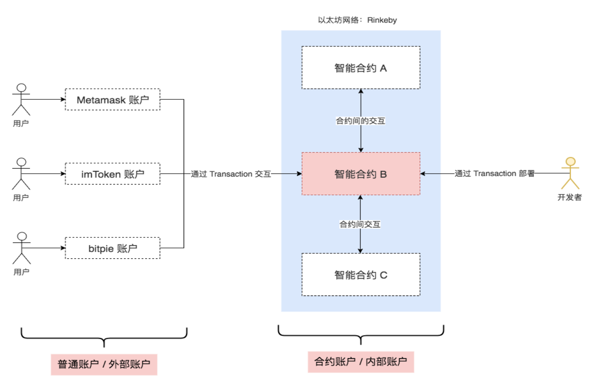

2022.2.19
账户详解，合约特性
比特币在基于UTXO的结构中存储有关用户余额的数据:系统的整个状态就是一组UTXO的集合，每个UTXO都有一个所有者和一个面值 (就像不同的硬币)，而交易会花费若干个输入的UTXO，并根据规则创建若干个新的UTXO:
每个引用的输入必须有效且尚未花费;对于一个交易，必须包含有与每个输入的所有者匹配的签名;总输入必须大于等于总输出值
每个账户都包括了一个余额(balance)，和以太坊特殊定义的数据(代码和内部存储)
如果发送帐户有足够的余额来支付，则交易有效;在这种情况下发送帐户先扣款，而收款帐户将记入这笔收入
比特币 UTXO 模式优点:
以太坊账户模式优点:
• 可以节省大量空间:不将 UTXOs 分开存储，而是合为一个账户;每个交易只需要一个输入、一个签名并产生一个输出。
• 更好的可替代性:货币本质上都是同质化、可替代的;UTXO的设计使得货币从来源分成了“可花费”和“不可花费”两类，这在实际应 用中很难有对应的模型。
• 更加简单:更容易编码和理解，特别是设计复杂脚本的时候。UTXO在脚本逻辑复杂时更令人费解。
• 便于维护持久轻节点:只要沿着特定方向扫描状态树，轻节点可以很容易地随时访问账户相关的所有数据。而UTXO的每个交易都会使得状态引用发生改变，这对轻节点来说长时间运行Dapp会有很大压力。
| BitCoin | Ethereum | |
|---|---|---|
| 设计定位 | 现金系统 | 去中心化应用平台 |
| 数据组成 | 交易列表(账本) | 交易和账户状态 |
| 交易对象 | UTXO | Accounts |
| 代码控制 | 脚本 | 智能合约 |
没有关联代码
合约账户 (Contract accounts)（内部账户）

签名的数据包，由EOA发送到另一个账户。所有的交易发起方都是EOA（外部账户），而对接收方没有规定。
-- 合约可以向其它合约发送“消息”
-- 消息是不会被序列化的虚拟对象，只存在于以太坊执行环境 (EVM)中
-- 可以看作函数调用
• 维护一个数据存储(账本)，存放对其他合约或外部世界有用的内容
• 最典型的例子是模拟货币的合约(代币)
• 管理多个用户之间的持续合同或关系 • 这方面的例子包括金融合同，以及某些特定的托管合同或某种保险